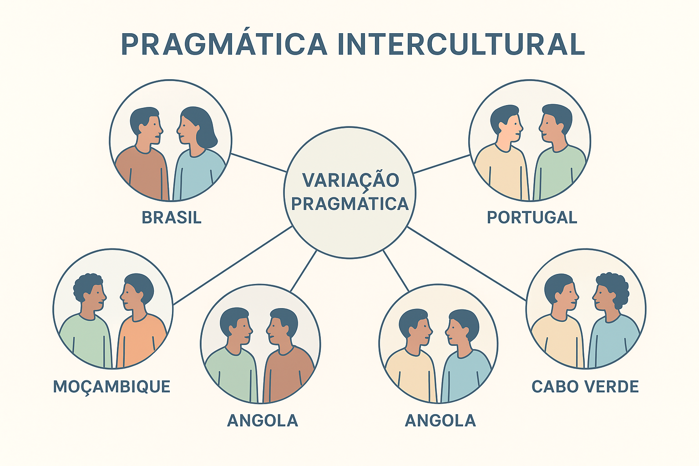

Pragmática Intercultural e Variação Pragmática no Mundo Lusófono
Compartilhar uma língua histórica comum, um léxico de base latina e um sistema ortográfico unificado não significa, de modo algum, compartilhar os mesmos hábitos comunicativos, as mesmas convenções de cortesia ou a mesma percepção do que seja ofensivo, polido ou solidário. Se colocarmos um cidadão de Lisboa, um profissional de São Paulo, um professor de Luanda e um comerciante de Maputo em uma mesa de negociações, todos falarão a Língua Portuguesa; contudo, a maneira como formularão pedidos, expressarão discordâncias, negociarão silêncios e gerenciarão suas faces sociais diferirá radicalmente. A disciplina linguística que desvenda esses contrastes é a Pragmática Intercultural aliada à Variação Pragmática.
Enquanto a Sociolinguística Variacionista laboviana tradicional concentrou-se historicamente nas variações fonológicas, morfológicas e sintáticas da língua (como a alternância entre a concordância plural padronizada e não padronizada), a vertente pragmático-cultural investiga a variação nos modos de ação discursiva. Como demonstraram teóricas como Jenny Thomas (1983), Shoshana Blum-Kulka (1989) e Istvan Kecskes (2014), o significado de um ato de fala não está encapsulado nas palavras, mas ancorado no sistema de valores, nas hierarquias de poder e nas visões de mundo específicas de cada comunidade de fala.
No cenário geopolítico contemporâneo da Comunidade dos Países de Língua Portuguesa (CPLP), nos exames de vestibular de alto nível (como o ENEM e o PAES UEMA) e nas relações diplomáticas e corporativas transnacionais, dominar a pragmática intercultural é indispensável para evitar o preconceito linguístico, superar estereótipos infundados (como o mito da "frieza portuguesa" ou da "falsidade brasileira") e construir pontes de diálogo baseadas na autêntica competência intercultural.
Neste artigo acadêmico completo, você explorará os fundamentos da Pragmática Intercultural, a distinção clássica de Jenny Thomas entre falhas pragmalinguísticas e sociopragmáticas, a matriz comparativa de polidez no mundo lusófono (Brasil, Portugal e PALOP), a variação intralinguística regional, roteiro metodológico de mediação cultural, exemplos práticos de mal-entendidos reais, questões resolvidas e sínteses teóricas.

A virada intercultural na Pragmática: conceitos e delimitações
A Pragmática clássica de Paul Grice, John Austin e John Searle foi formulada, em grande medida, sob a presunção de um "falante-ouvinte ideal" imerso em sociedades ocidentais anglo-saxônicas homogêneas. A partir da década de 1980, contudo, a Linguística Aplicada percebeu que princípios como as quatro máximas conversacionais de Grice ou as fórmulas de polidez de Brown e Levinson não são universais mecânicos, mas variáveis culturais dinâmicas.
Dentro desse vasto campo, distinguem-se três vertentes complementares:
- Pragmática Transcultural (Cross-Cultural Pragmatics): compara de forma contrastiva os padrões comunicativos de dois ou mais grupos culturais isolados (por exemplo, comparando como falantes nativos de Portugal e do Brasil realizam o ato de fala de desculpar-se);
- Pragmática Interlíngua (Interlanguage Pragmatics): investiga como aprendizes de uma segunda língua (L2) adquirem e empregam as normas de polidez e força ilocucionária da língua-alvo;
- Pragmática Intercultural (Intercultural Pragmatics): estuda a interação concreta em tempo real entre indivíduos que possuem sistemas referenciais, normas socioculturais e variantes linguísticas distintas, focando na cocriação de sentidos e nos mal-entendidos emergentes.
A complexidade do encontro intercultural segundo Jenny Thomas
“A falha gramatical em uma língua revela apenas que o falante é um aprendiz menos proficiente; contudo, a falha pragmática frequentemente leva o interlocutor a julgá-lo como uma pessoa rude, desonesta, agressiva ou insincera. Não se trata de uma inadequação formal de código, mas de um choque entre sistemas éticos e expectativas de conduta social” (THOMAS, 1983, p. 97; KECSKES, 2014).
Falha Pragmalinguística vs. Falha Sociopragmática: a tipologia de Jenny Thomas
Em seu estudo seminal Cross-Cultural Pragmatic Failure (1983), a linguista Jenny Thomas estabeleceu uma distinção que se tornou o padrão-ouro internacional para o diagnóstico de ruídos comunicativos em contextos interculturais:
Falha Pragmalinguística
Ocorre quando as estratégias linguísticas ou recursos literais de uma língua/variante são transferidos mecanicamente para outra, gerando um efeito ilocucionário não pretendido.
Causa: Mapeamento imperfeito da força ilocucionária das palavras.
Exemplo: Um brasileiro que, ao pedir algo em Lisboa, traduz o imperativo atenuado do PB e diz: “Me dá um café aí”, gerando espanto pela quebra de forma ritual.
Falha Sociopragmática
Ocorre quando o falante transgride as convenções sociais e valores normativos sobre o que é aceitável, quem possui autoridade, qual o grau de distância entre sujeitos e quais tópicos são tabus em dada cultura.
Causa: Choque entre visões de mundo e concepções éticas de relacionamento.
Exemplo: Um profissional que pergunta a um colega estrangeiro sobre sua renda ou vida íntima em uma reunião formal de trabalho.
Normas de polidez e sistemas de tratamento no mundo lusófono
A Comunidade dos Países de Língua Portuguesa (CPLP) abrange mais de 280 milhões de pessoas espalhadas por quatro continentes. Embora compartilhem a mesma norma ortográfica unificada, suas matrizes pragmáticas revelam profundos contrastes socioculturais:
1. O Português Brasileiro (PB): Solidariedade, Empatia e Proximidade
A cultura comunicativa brasileira é orientada predominantemente para a polidez positiva (BROWN; LEVINSON, 1987). O falante brasileiro tende a encurtar distâncias sociais imediatas:
- Sistemas Alocutivos: Generalização do pronome você como forma neutra de tratamento horizontal, associado a vocativos afetivos espontâneos mesmo entre desconhecidos no comércio (amigo, querida, chefe, meu jovem);
- Mitigação de Atos Diretivos: Os pedidos raramente são formulados no modo imperativo direto. O brasileiro recorre a circunlocuções atenuadoras e ao diminutivo afetivo/mitigador: “Você poderia dar uma olhadinha nisso para mim, por favor?”;
- Gerenciamento do Tempo: A pontualidade nos compromissos sociais admite margens de tolerância afetiva, e o "não" explícito é frequentemente evitado em prol de evasivas polidas (“Vamos nos falando”, “Qualquer coisa eu te aviso”).
2. O Português Europeu (PE): Reserva, Formalidade e Respeito à Autonomia
A matriz pragmática portuguesa estrutura-se com forte ênfase na polidez negativa e no respeito ao território do alocutário:
- Sistemas Alocutivos Complexos: Manutenção da distinção rígida entre a intimidade do tu (restrito a familiares, amigos próximos e crianças) e a deferência assimétrica de o senhor / a senhora. O pronome você possui uma carga estilística delicada: pode soar burocrático ou hierarquicamente condescendente se mal empregado;
- Franqueza nos Atos de Fala Diretivos: Em interações comerciais e de serviço, o falante português é admiravelmente direto e objetivo: “Queria um café” ou “Dê-me a conta, se faz favor”. O que para o ouvido brasileiro soa falsamente "rude", para o português é a forma mais transparente e honesta de cooperar com o trabalho do outro sem fingimentos;
- Demarcação de Fronteiras: Forte separação entre a esfera pública profissional e a intimidade da vida privada.
3. Os Países Africanos de Língua Oficial Portuguesa (PALOP)
Em Angola, Moçambique, Cabo Verde, Guiné-Bissau e São Tomé e Príncipe, a língua portuguesa coexiste com centenas de línguas maternas autóctones (bantas, crioulos de base portuguesa e outras matrizes africanas), forjando um hibridismo pragmático de extraordinária riqueza:
- Respeito Sagrado à Ancestralidade e Hierarquia: O tratamento conferido aos mais velhos (kotas em Angola, mais-velhos) e às autoridades comunitárias exige rituais linguísticos estritos de subordinação e deferência verbal;
- Títulos Honoríficos Funcionais: Uso rigoroso de títulos acadêmicos, profissionais e corporativos (Dr., Engenheiro, Professor, Camarada) para marcar a respeitabilidade do interlocutor no espaço público;
- Alternância de Código (Code-Switching): O falante transita do português formal para expressões do crioulo ou de línguas locais para estabelecer cumplicidade étnica, afetiva e nacional.
| Região Lusófona | Eixo de Polidez Dominante | Padrão nos Atos Diretivos (Pedidos) | Tratamento Alocutivo Predominante | Estratégia Face ao Conflito |
|---|---|---|---|---|
| Brasil | Polidez Positiva (aproximação, afeto) | Indireto, circunlocuções e diminutivos atenuadores | Você generalizado + vocativos fraternos | Atenuação e evitação do "não" direto |
| Portugal | Polidez Negativa (reserva, não invasão) | Direto, conciso com fórmulas (se faz favor) | Alternância estrita: Tu vs. O senhor/A senhora | Franqueza assertiva e literalidade |
| Angola / Moçambique | Deferência Hierárquica e Comunitária | Formal, protocolar e mediado por fórmulas de respeito | Títulos honoríficos e reverência aos mais velhos | Preservação da dignidade pública da linhagem |
| Cabo Verde / Guiné-Bissau | Hibridismo Identitário e Comunitário | Contextual, mediado pela alternância de código | Oscilação afetiva entre o crioulo e o português formal | Solidariedade comunitária e mediação coletiva |
A desconstrução de estereótipos preconceituosos
O estudo científico da Pragmática Intercultural tem o poder político de desarmar preconceitos históricos: o português não é "grosso" ou "mal-humorado" porque diz objetivamente “O que deseja?” sem rodeios — ele está apenas aplicando a norma pragmática de sua comunidade que valoriza a eficiência e a clareza; da mesma forma, o brasileiro não é "preguiçoso" ou "dissimulado" porque diz “Vou ver se consigo e te ligo” para recusar um pedido — ele está empregando a norma de sua comunidade que prioriza preservar os sentimentos do outro a qualquer custo.
A variação pragmática intralinguística: o Brasil e suas múltiplas vozes
A variação pragmática não ocorre apenas entre países distantes pelo oceano: ela manifesta-se com vigor no interior de um mesmo território nacional. No Brasil, o uso dos sistemas alocutivos reflete profundas clivagens regionais e históricas:
- Região Sul e partes do Norte/Nordeste (RS, SC, PA, MA): preservação do pronome deítico tu, ora conjugado na segunda pessoa normativa clássica (“Tu foste”), ora associado à terceira pessoa do singular (“Tu foi”), codificando proximidade íntima ou identidade cultural local;
- Região Sudeste e Centro-Oeste: consolidação quase absoluta do você em todos os estratos sociais, empurrando as formas de respeito unicamente para o polo o senhor / a senhora;
- Comunidades Digitais Lusófonas: a juventude da internet reconfigura a pragmática universalizando memes compartilhados, o uso de caixa alta para simular gritos emotivos, e emojis operando como marcadores de força ilocucionária (um ponto final isolado em mensagens instantâneas pode ser interpretado pragmaticamente como frieza, irritação ou ruptura de diálogo).
Roteiro metodológico: como analisar interações interculturais
Para diplomatas, professores de línguas, analistas internacionais e pesquisadores do discurso, a mediação e o diagnóstico de interações interculturais deve seguir este roteiro analítico:
Passo a Passo da Análise Pragmático-Intercultural
- Identificação das comunidades de fala dos interlocutores: mapear a variante nacional, a região de origem, a idade e a esfera profissional dos participantes;
- Exame da assimetria institucional e de poder: verificar se há posições hierárquicas desiguais (chefe-subordinado, fiscal-cidadão) ou se a relação é simétrica entre pares;
- Isolamento dos atos de fala críticos: focar a atenção na formulação de pedidos (diretivos), desculpas (expressivos), promessas (compromissivos) e recusas;
- Diagnóstico de falhas de comunicação: categorizar se o estranhamento resultou de uma falha pragmalinguística (má escolha vocabular ou literalidade) ou sociopragmática (quebra de etiqueta, tabu ou hierarquia);
- Avaliação do gerenciamento de faces: analisar se a discordância foi percebida como uma agressão à face positiva ou se foi interpretada como franqueza honesta e profissional;
- Formulação de mediação conciliadora: explicitar pedagogicamente as premissas ocultas de cada cultura comunicativa para restabelecer a cooperação pragmática harmoniosa.
Exemplos práticos de análise aplicada
Caso 1: O atendimento no café em Lisboa
Cena: Um turista brasileiro entra em uma pastelaria tradicional na Baixa de Lisboa e diz com sorriso amigável:
“Oi, bom dia! Por gentileza, você poderia me ver um cafezinho pingado e um pastel de nata, fazendo o favor?”
O atendente português, sério e expedito, olha fixamente e responde:
“Com certeza. Mas eu não lhe posso 'ver' nada, só lhe posso servir. São um euro e vinte.”
Análise Pragmático-Cultural:
1. O Falante Brasileiro: mobilizou a polidez positiva com alto grau de atenuação: saudação expansiva, futuro do pretérito condicional (poderia), diminutivo carinhoso (cafezinho), fórmula idiomática do PB (me ver) e redundância de cortesia (por gentileza / fazendo o favor) para não soar impositivo;
2. O Falante Português: opera sob a polidez negativa e a literalidade semântica: para ele, a perífrase "ver um café" soa semanticamente absurda ou desnecessariamente teatral, e o uso de "você" por um desconhecido é inadequado. Ao corrigir o verbo e servir prontamente o pedido, o português não pretendia humilhar o cliente, mas aplicar a máxima de clareza e franqueza profissional;
3. O Diagnóstico: Trata-se de um clássico choque de falha pragmalinguística e de estilo alocutivo, onde a prolixidade polida de uma cultura colidiu com a sobriedade objetiva da outra.
Caso 2: A negociação corporativa luso-brasileira-angolana
Contexto: Uma multinacional de engenharia com escritórios em Luanda, São Paulo e Porto organiza uma reunião virtual de alinhamento de metas.
• O engenheiro brasileiro abre a reunião dizendo: “E aí, galera! Como estão as coisas por aí? Vamos bater um papo rápido sobre o cronograma?”;
• O diretor angolano permanece em silêncio severo, aguardando que os cumprimentos protocolares formais ao seu cargo e à sua experiência sênior sejam verbalizados perante os assistentes;
• O gestor português intervém secamente: “O cronograma está atrasado duas semanas por vossa responsabilidade técnica. O que tencionam fazer hoje?”.
Análise das Faces: O brasileiro cometeu uma falha sociopragmática perante o parceiro angolano ao apagar a hierarquia e os títulos com o vocativo informal “galera”; por sua vez, a assertividade direta do gestor português feriu a face positiva do brasileiro (que esperava um preâmbulo ameno), mas satisfez o padrão executivo europeu de eficiência e responsabilidade funcional.
Conclusão da análise empírica
O domínio da Pragmática Intercultural comprova que a verdadeira diplomacia das palavras exige descentrar-se de sua própria cultura: o que é virtude comunicativa para um grupo pode ser visto como vício ou afronta para outro.
Questões para estudo e reflexão
Questão 1
(Concurso Público / Relações Internacionais e Diplomacia) No âmbito dos estudos da Pragmática Intercultural formulados seminalmente por Jenny Thomas (1983), a chamada falha sociopragmática caracteriza-se fundamentalmente por:
- A) Erros ortográficos e de conjugação verbal no padrão normativo formal da língua.
- B) Incompreensões que decorrem do desconhecimento ou da discordância a respeito das normas sociais, hierarquias de poder, tabus e valores culturais compartilhados pela comunidade de fala.
- C) Dificuldades de pronúncia fonética que impedem o receptor de distinguir pares mínimos sonoros.
- D) Emprego incorreto de figuras de linguagem em textos literários canônicos.
Ver resposta comentada
Gabarito: B.
Resposta comentada: Enquanto a falha pragmalinguística é de natureza formal (tradução infeliz de recursos linguísticos de um idioma para outro), a falha sociopragmática é de natureza cultural e ética: reflete o choque entre o que as diferentes sociedades julgam ser o comportamento moral, social e interpessoalmente apropriado em determinada situação.
Questão 2
(PAES UEMA / Letras) Em romances de escritores africanos de língua portuguesa, como Mia Couto (Moçambique) e Pepetela (Angola), é frequente a presença de personagens mais velhas que recebem tratamento reverente constante por meio de vocativos tradicionais e títulos comunitários. Sob a ótica da Pragmática Cultural, qual valor social essa escolha linguística codifica?
Ver resposta comentada
Resposta comentada: Codifica a sobrevivência e a centralidade dos valores éticos das sociedades comunitárias tradicionais africanas (de matriz banta e de sabedoria ancestral), nas quais a velhice é sinônimo de autoridade moral, sabedoria acumulada e liderança coletiva. O sistema de tratamento do português é reapropriado e hibridizado para refletir a deferência incontestável da juventude em relação aos mais velhos (kotas / mais-velhos), operando como marca de preservação da face positiva e da ordem comunitária.
Questão 3
(ENEM / Variação Linguística e Cidadania) Um estudante universitário português recém-chegado ao Brasil para um programa de intercâmbio relata a seguinte impressão: “Nos primeiros dias na universidade brasileira, achei que todos os meus colegas eram meus amigos de infância, pois me abraçavam, me chamavam de querido e diziam 'vamos almoçar qualquer dia'. Passados dois meses, percebi que muitos nem sequer sabiam o meu sobrenome.” À luz da Teoria da Polidez de Brown e Levinson, como a Pragmática explica a desilusão do intercambista?
- A) Os estudantes brasileiros agiram com hipocrisia deliberada para prejudicar o colega estrangeiro.
- B) O estudante português não dominava a gramática normativa da Língua Portuguesa.
- C) Houve um choque de estilos pragmáticos: o brasileiro empregou estratégias generalizadas de polidez positiva (afeto e aproximação como ritual de recepção), as quais foram interpretadas pelo português sob a régua da polidez negativa de sua cultura (na qual intimidade verbal pressupõe vínculo afetivo sólido e previamente comprovado).
- D) O intercâmbio gerou uma quebra irreparável da máxima de qualidade de Paul Grice em razão de uma anomalia fonética.
Ver resposta comentada
Gabarito: C.
Resposta comentada: No Brasil, a polidez positiva é o protocolo de entrada padrão na interação social: abraços, sorrisos e o convite aberto ("vamos marcar") são fórmulas de cortesia destinadas a fazer o outro sentir-se bem-vindo, sem compromisso factual imediato. Em Portugal, a reserva da polidez negativa dita que o afeto e a intimidade verbal só são concedidos após longa convivência comprovada. O estudante interpretou uma cortesia ritual de superfície como um pacto de amizade íntima profunda.
Questão 4
(Exame Acadêmico / Pós-Graduação em Linguística) Por que os linguistas afirmam que o pronome de tratamento você ocupa um lugar de instabilidade pragmática na sociedade portuguesa contemporânea, ao contrário de sua estabilidade funcional no Brasil?
Ver resposta comentada
Resposta comentada: No Brasil, você perdeu a carga de pronome de tratamento senhorial e gramaticalizou-se como a forma neutra e universal de segunda pessoa do discurso, operando tanto na horizontalidade íntima quanto no comércio. Em Portugal, contudo, a divisão entre tu (intimidade horizontal pura) e o senhor / a senhora (respeito vertical absoluto) continua viva. O pronome você ficou encurralado em uma "zona cinzenta" intermediária: se dito a um amigo de infância, soa frio e distante; se dito a um idoso ou superior hierárquico, soa desrespeitoso e insolente; e se usado no meio profissional, pode ser interpretado como arrogância de quem olha o outro de cima para baixo.
Questão 5
(Vestibular Tradicional / Sociolinguística) Como a teoria da variação pragmática intralinguística rebate a tese preconceituosa de que em certas regiões do Brasil as pessoas falam de forma "mais correta" ou "mais educada" do que em outras?
Ver resposta comentada
Resposta comentada: A variação pragmática comprova que diferentes comunidades de fala desenvolvem sistemas distintos de equilíbrio social moldados por suas histórias de povoamento, heranças culturais e estruturas comunitárias. O habitante de certas áreas do Sul ou do Maranhão que mantém o tu com desinências clássicas não é "mais culto", apenas preservou um sistema alocutivo conservador; o habitante do interior de Minas Gerais ou do Nordeste que recorre a diminutivos e fórmulas acolhedoras não é "informal demais", mas mobiliza com maestria a solidariedade cooperativa de sua região. Nenhuma variante é intrinsicamente superior: todas cumprem com perfeição a função pragmática de mediar as relações humanas em seus contextos originais.
Resumo da Pragmática Intercultural
- A Pragmática Intercultural investiga como a cultura molda o uso, o sentido e a interpretação da linguagem humana;
- Compartilhar a mesma língua histórica (como o português) não garante compartilhar as mesmas convenções de cortesia e polidez;
- Jenny Thomas distinguiu falhas pragmalinguísticas (erros na escolha das formas verbais) de falhas sociopragmáticas (choque de normas, valores e visões de mundo);
- No Brasil, predomina a polidez positiva, caracterizada pela busca de aproximação, solidariedade, diminutivos mitigadores e generalização do você;
- Em Portugal, prevalece a polidez negativa, fundamentada na reserva, respeito à autonomia, franqueza objetiva nos pedidos e alternância rígida entre tu e o senhor;
- Nos países africanos de língua oficial portuguesa (PALOP), observa-se um hibridismo entre normas europeias e a veneração comunitária ancestral aos mais velhos;
- A variação pragmática intralinguística manifesta-se nas peculiaridades regionais de alocução e nas convenções das comunidades digitais juvenis;
- O domínio da pragmática intercultural é essencial para desarmar preconceitos linguísticos, aprimorar a diplomacia e garantir o sucesso em exames de alto nível como o ENEM.
Perguntas frequentes sobre Pragmática Intercultural
O que estuda a Pragmática Intercultural?
A Pragmática Intercultural investiga como pessoas de diferentes origens culturais, etnolinguísticas ou variantes regionais produzem e interpretam a linguagem em situações reais de contato, analisando atos de fala, normas de cortesia e expectativas comunicativas.
Qual é a diferença entre falha pragmalinguística e falha sociopragmática?
A falha pragmalinguística ocorre quando o falante transfere equivocadamente uma estrutura verbal ou estratégia literal de sua língua materna para outra; já a falha sociopragmática decorre de visões de mundo divergentes, desrespeitando o que a cultura local considera apropriado quanto a hierarquia, tabu ou distância social.
Por que o pronome "você" pode soar rude em Portugal?
Porque no português europeu o pronome "você" ocupa uma posição intermediária tensa: não possui a intimidade calorosa do "tu", nem a deferência respeitosa de "o senhor/a senhora", sendo interpretado por vezes como distanciamento burocrático ou até tratamento condescendente.
Como os atos diretivos (pedidos) diferem entre o Brasil e Portugal?
Em Portugal, prevalece uma objetividade mais direta no atendimento (ex.: "Dê-me um café" ou "Queria um café, se faz favor"); no Brasil, o falante tende a usar circunlocuções atenuadas e diminutivos afetivos (ex.: "Você poderia ver se tem um cafezinho para mim?"), evitando parecer impositivo.
O que caracteriza a pragmática do português em países africanos (PALOP)?
Caracteriza-se pela coexistência harmoniosa entre normas jurídicas herdadas do português e valores de ancestralidade e hierarquia tradicionais das línguas bantas e crioulos locais, exigindo elevado respeito comunitário aos mais velhos e aos cargos honoríficos.
Falar a mesma língua garante o entendimento mútuo entre falantes de diferentes países?
Não. Embora a gramática básica seja compartilhada, as normas pragmáticas (o que conta como polido, ofensivo, urgente ou irônico) variam profundamente, gerando mal-entendidos pragmáticos em interações cotidianas, acadêmicas ou diplomáticas.
O que é "variação pragmática intralinguística"?
É o estudo da variação nos hábitos pragmáticos e de polidez entre diferentes regiões, grupos sociais, faixas etárias ou gêneros que compartilham a mesma língua histórica (como as diferenças entre o Rio de Janeiro, São Paulo, Nordeste e Sul do Brasil).
Por que a Pragmática Intercultural é cobrada em provas e vestibulares?
Porque os exames atuais valorizam a cidadania global e a desconstrução do preconceito linguístico, exigindo que o aluno reconheça a legitimidade das diversas variantes lusófonas e saiba analisar como choques culturais moldam textos literários, crônicas e reportagens.
Considerações finais
A Pragmática Intercultural ensina que a Língua Portuguesa não é um patrimônio monolítico encerrado em gramáticas rígidas, mas uma constelação viva de vozes, identidades e sensibilidades humanas espalhadas pelo globo. Compreender que a polidez de uma cultura pode se expressar pela reserva silenciosa enquanto em outra transborda em afeto caloroso é o passo definitivo para superar o etnocentrismo linguístico.
Para estudantes de Letras, educadores, diplomatas, comunicadores e profissionais que operam no mercado internacional, o domínio da variação pragmática oferece a chave mestra para transformar o encontro com a diferença cultural em uma oportunidade fértil de empatia, enriquecimento mútuo e cooperação cidadã.
Conteúdos relacionados
- Introdução à Pragmática: o Estudo do Uso da Linguagem em Contexto
- Deixis: a linguagem que aponta para o contexto
- Teoria dos Atos de Fala: Austin, Searle e a Ação pela Linguagem
- Princípios da Comunicação: Cooperação, Máximas de Grice e Cortesia
- Inferência e Implicatura: o Sentido Além do Literal
- Pragmática e Gêneros Textuais: a Linguagem em Ação
- Pragmática e Ironia: O Sentido nas Entrelinhas
- Pragmática | Linguagem, Contexto e Construção de Sentidos — Índice Geral
Referências
- BAGNO, Marcos. Preconceito linguístico: o que é, como se faz. 49. ed. São Paulo: Loyola, 2007.
- BLUM-KULKA, Shoshana; HOUSE, Juliane; KASPER, Gabriele (ed.). Cross-Cultural Pragmatics: Requests and Apologies. Norwood: Ablex Publishing, 1989.
- BROWN, Penelope; LEVINSON, Stephen C. Politeness: Some Universals in Language Usage. Cambridge: Cambridge University Press, 1987.
- CASTILHO, Ataliba T. de. Nova gramática do português brasileiro. São Paulo: Contexto, 2010.
- DUARTE, Inês. O estatuto do pronome você no português europeu contemporâneo. In: Revista Portuguesa de Humanidades, Braga, v. 10, n. 1, p. 121-138, 2006.
- FARACO, Carlos Alberto. Linguagem & diálogo: as ideias linguísticas do Círculo de Bakhtin. São Paulo: Parábola Editorial, 2009.
- HYMES, Dell. On Communicative Competence. In: PRIDE, J. B.; HOLMES, J. (ed.). Sociolinguistics. Baltimore: Penguin Books, 1972. p. 269-293.
- KECSKES, Istvan. Intercultural Pragmatics. Oxford: Oxford University Press, 2014.
- THOMAS, Jenny. Cross-Cultural Pragmatic Failure. In: Applied Linguistics, Oxford, v. 4, n. 2, p. 91-112, 1983.
Explore Outros Conteúdos
Continue seus estudos acessando outras seções do site Mestre Kira: